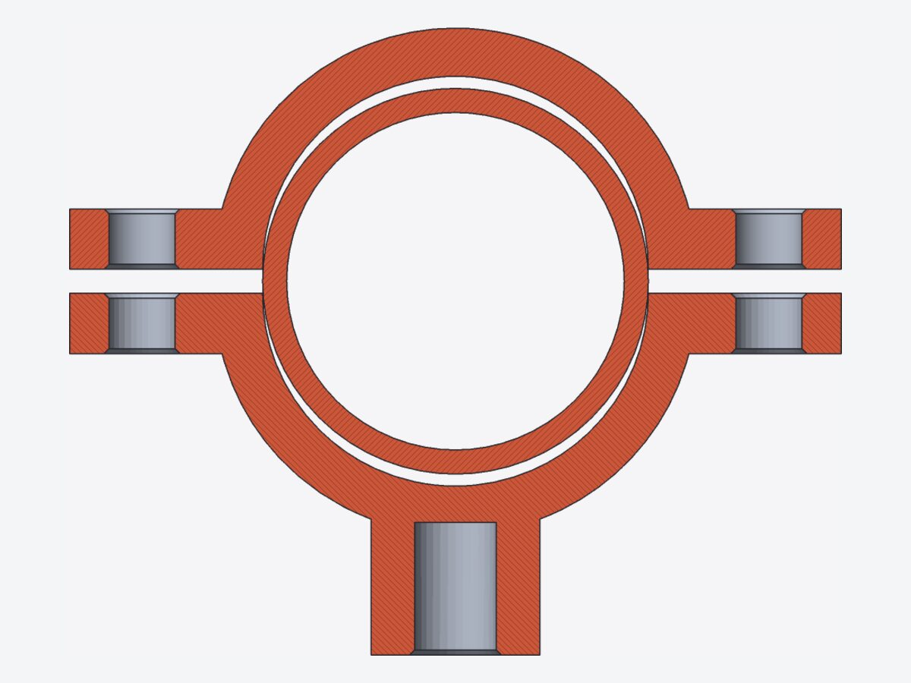
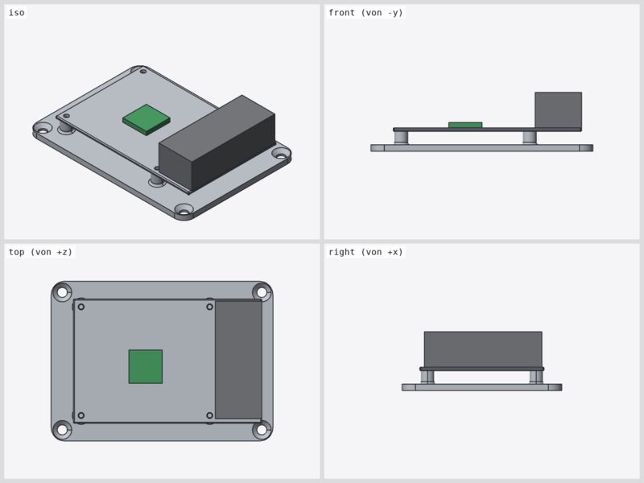
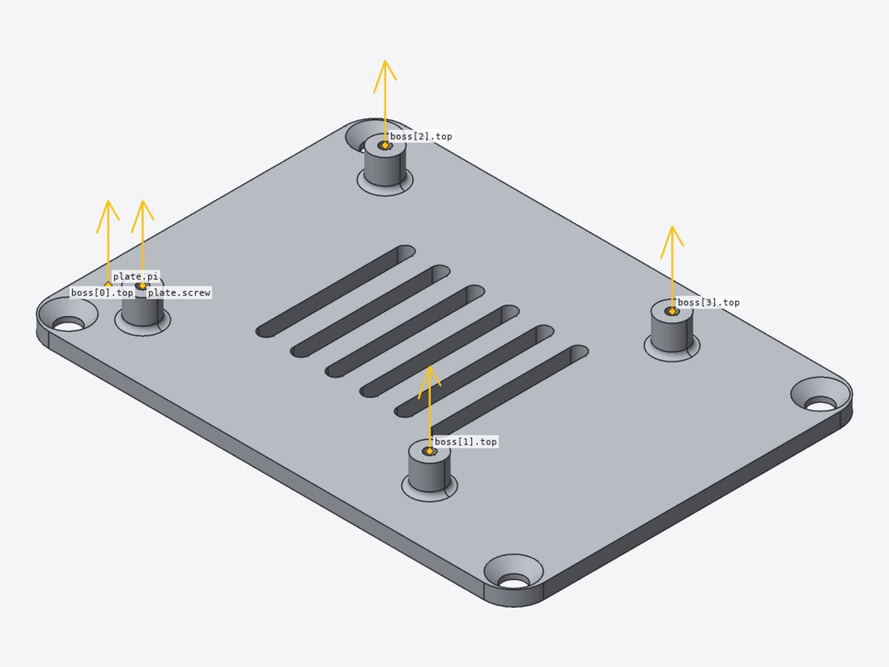
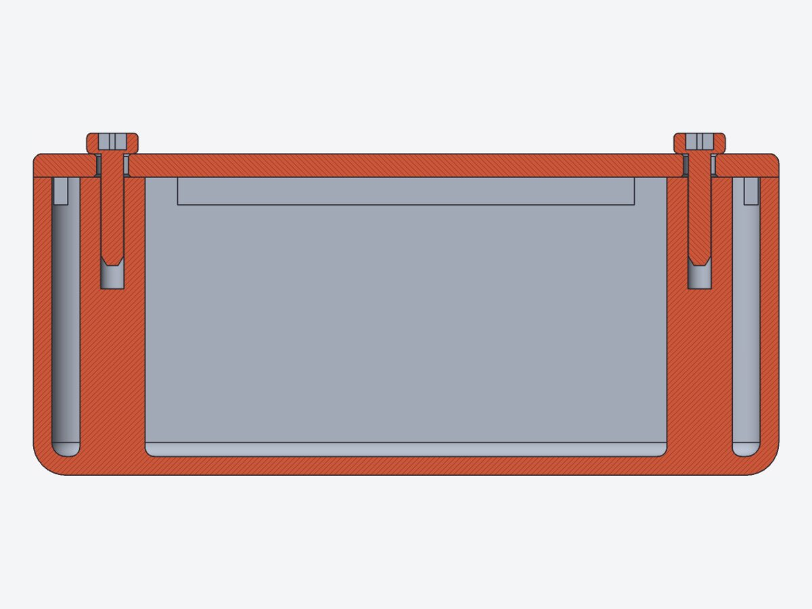
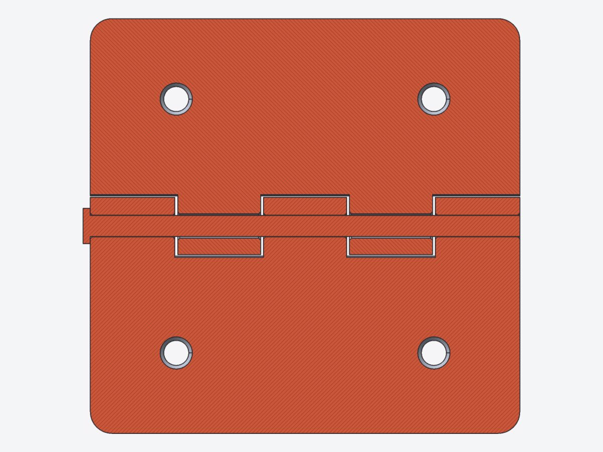
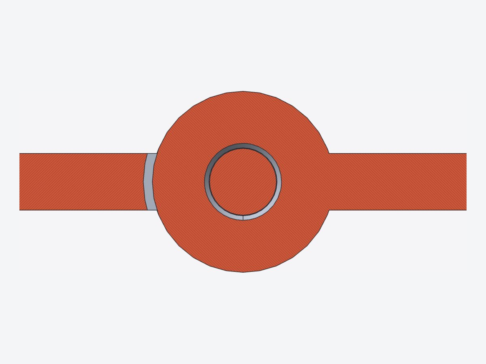
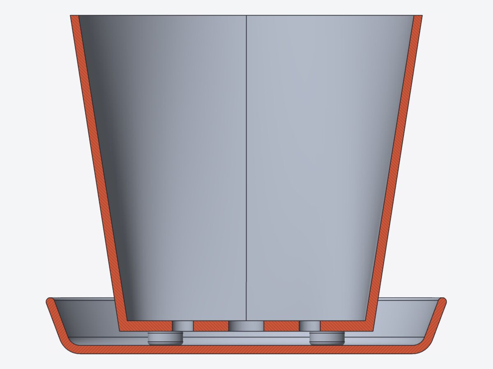

19 parametric models from tests/models/everyday/: household, desk, workshop and typical machine parts – from the mug to the pillow block bearing.
The collection serves two purposes: as a template for your own parts (every model is a module with default values, all dimensions in mm) and as a test suite that uses the language broadly – grids and anchors, fillet and chamfer via zones, shell, loft, sweep, profiles, include/use, named instances as parts. The regression tests/everyday/check.sh checks all models; bugs and weaknesses found are listed in tests/models/everyday/README.md.
For each model the catalogue shows a page with description, rendering, views, key data, parameters and the language features used; assemblies have a second page with parts, measured distances and a section or the anchors. All values are measured with the CLI.
Opening a model
mcad tests/models/everyday/mug.mcaddesktop UI: editor and 3Dmcad tests/models/everyday/housing/assembly as project (folder)mcad render tests/models/everyday/mug.mcad -o mug.png --views allheadless: imagemcad outline tests/models/everyday/mug.mcadparameters, grids, anchors, partsmcad measure tests/models/everyday/mug.mcad --volume --colorsvolume, mass per colourmcad export tests/models/everyday/gear.mcad --all-parts -o parts/STL/STEP/3MF per part
19models
7with multiple parts
36parts
1.46 kgPLA for everything
As of 2026-10-26, commit 83fbe92 · generated with node tools/report/katalog.mjs · images cad render --view iso --perspective, fitted · mass: PLA 1.24 g/cm³ · kernel time: scene.stats.kernel_ms from cad eval --no-daemon
Stand for a phone up to 12 mm thick. The side profile is a polygon of points of a 2D grid and is extruded over the width w = 70 mm; the backrest (95 mm, wall t = 5 mm) is at an angle a = 65° to the horizontal, a triangular window lightens it. A cable hole Ø 9 mm with a channel under the base takes the charging cable. Inner corners of lip and shelf as well as the top edge of the lip are filleted with two radii via zones on grid lines.
gridanchoranchor with dirnamed instancesfunctionletpolygonlinear_extrudefillet zoneszonebox(a, b)
Opencad tests/models/everyday/phone_stand.mcadheadlesscad render tests/models/everyday/phone_stand.mcad -o bild.png --views all
02
Mug with handle
Single part
Drinking mug as a conical solid of revolution (radius at the bottom r_bottom = 36 mm, at the top r_top = 41 mm, height h = 95 mm), opened at the top with shell and a 2.8 mm wall. The bottom edge is filleted with r 6 mm via a zone on the bottom plane, the drinking rim via a second zone. The handle (Ø 9 mm) is a sweep of a circle along a spline path whose ends sit radially in the wall, attached with union(fillet = …).
gridanchoranchor with dirnamed instancesfunctionpolygonsplinerotate_extrudesweepshellfillet zoneszoneunion(fillet)
Opencad tests/models/everyday/mug.mcadheadlesscad render tests/models/everyday/mug.mcad -o bild.png --views all
03
Cable clip for the desk edge
Single part
Cable holder that clips onto a desk top of thickness = 19 mm (clearance 0.4 mm). The C clamp is an extruded profile (wall 3.5 mm, arms 28 and 18 mm) with a clamping bump; above it sits a block with n = 4 cable channels Ø 6 mm at a pitch of 12 mm, inserted from the top. The channels lie on indexed grid planes, their edges are filleted with difference(fillet = …), the inner corners of the clamp via zones.
Opencad tests/models/everyday/cable_clip.mcadheadlesscad render tests/models/everyday/cable_clip.mcad -o bild.png --views all
04
Wall hook
Single part
Hook for a jacket or towel: wall plate 32 × 80 × 6 mm with filleted corners (r 8 mm), chamfered front edge and two countersunk holes (Ø 4.2 mm, head Ø 8.5 mm). Chamfer and fillet are nested, so that the chamfer also covers the boundary edges of the fillet. The hook (Ø 9 mm, reach 38 mm) is a sweep along a spline path with a ball knob Ø 14 mm, attached with union(fillet = …).
gridanchoranchor with dirnamed instancesforsplinesweepfillet zoneschamfer zoneszoneunion(fillet)box(a, b)cone (r1, r2)sphere
Opencad tests/models/everyday/wall_hook.mcadheadlesscad render tests/models/everyday/wall_hook.mcad -o bild.png --views all
05
Soap dish
Single part
Soap dish 115 × 80 × 24 mm with drainage. The tray is a box whose vertical corners (r 14 mm) and bottom edges are filleted via nested zones and which shell (wall 2.2 mm) opens at the top. n = 7 round support ribs are cylinder(a, b, r) between grid points, with drainage slots with filleted edges between them; underneath stand four feet (3 mm).
Opencad tests/models/everyday/soap_dish.mcadheadlesscad render tests/models/everyday/soap_dish.mcad -o bild.png --views all
06
Pen box
Single part
Pen box with three tall compartments (widths 38 / 26 / 26 mm, depth 70 mm, height 95 mm) and a low front compartment (22 mm deep, 45 mm high), wall 2.4 mm. The compartment boundaries are indexed grid planes computed by a recursive function from the list of compartment widths. Four nested zone blocks fillet the vertical edges (outside r 5 mm, pockets r 2 mm) and the pocket floors and chamfer the rear top edges; the top edges of the front compartment stay sharp (kernel limit F6).
gridanchoranchor with dirnamed instancesfunctionrecursionlist comprehensionforif / ?:fillet zoneschamfer zoneszonebox(a, b)
Opencad tests/models/everyday/pen_box.mcadheadlesscad render tests/models/everyday/pen_box.mcad -o bild.png --views all
07
Door stop
Single part
Wedge 120 mm long, 44 mm wide and 32 mm high at the back. The body is a loft through three trapezoid profiles (height at the back, middle 14 mm, tip 3 mm), laid flat with rotate([90, 0, 90]); its bottom edge is chamfered beforehand via a zone on the bottom plane. On top there is a finger recess, underneath 6 transverse grooves against slipping, at the back a hanging hole Ø 8 mm.
Opencad tests/models/everyday/door_stop.mcadheadlesscad render tests/models/everyday/door_stop.mcad -o bild.png --views all
08
Pot trivet
Single part
Trivet Ø 180 mm, 8 mm high: three concentric rings (centre radii 36 / 62 / 87 mm, web 6 mm) as rotate_extrude of a rectangle in a for loop, connected by 8 spokes and a centre disc (r 20 mm). All top edges of rings and spokes are chamfered in one block via a zone on the top plane; underneath there are three recesses for rubber feet Ø 10 mm.
gridanchoranchor with dirnamed instancesforrotate_extrudechamfer zoneszonebox(a, b)
Opencad tests/models/everyday/trivet.mcadheadlesscad render tests/models/everyday/trivet.mcad -o bild.png --views all
09
Flange plate
Single part
Flange Ø 120 mm, 12 mm thick, with collar Ø 60 mm (height 28 mm) and bore Ø 32 mm. The cross-section is a polygon from a 2D grid, revolved with rotate_extrude; on the bolt circle Ø 90 mm lie 6 through holes Ø 11 mm (M10), plus a sealing groove 1.5 mm deep. The transition collar/disc is filleted by a dedicated module used as a zone (ring_zone), bore and outer edges are chamfered via volume zones.
gridanchoranchor with dirnamed instancesforpolygonrotate_extrudefillet zoneschamfer zonesdifference(fillet/chamfer)
Opencad tests/models/everyday/flange.mcadheadlesscad render tests/models/everyday/flange.mcad -o bild.png --views all
10
Pillow block 608
Single part
Bearing block for a 608 deep-groove ball bearing (22 × 8 mm), axis height 30 mm. The base plate 80 × 30 × 8 mm has two slots for M6 (6.5 × 14 mm, helper module) for alignment; the bearing eye (r 20 mm, 14 mm wide) is a box with a tangentially adjoining cylinder(a, b, r) and has a stop shoulder Ø 18 mm. The fillets around the eye are created via zones on grid lines in x, y and z.
gridanchoranchor with dirnamed instancesforfillet zoneschamfer zoneszonedifference(fillet/chamfer)box(a, b)cylinder(a, b, r)
Opencad tests/models/everyday/pillow_block.mcadheadlesscad render tests/models/everyday/pillow_block.mcad -o bild.png --views all
11
Mounting bracket with rib
Single part
Bracket with legs of 60 and 50 mm, 40 mm wide and 5 mm thick, with n_ribs = 1 stiffening rib (4 mm thick, 30 mm long). The ribs are extruded triangles on indexed grid planes; inner edge and rib joints are filleted in one zone block, so that the corner transitions run cleanly. The holes Ø 5.5 mm (M5) are chamfered with difference(chamfer = …).
gridanchoranchor with dirnamed instanceslist comprehensionforpolygonlinear_extrudefillet zoneszonedifference(fillet/chamfer)box(a, b)cylinder(a, b, r)
Opencad tests/models/everyday/rib_bracket.mcadheadlesscad render tests/models/everyday/rib_bracket.mcad -o bild.png --views all
12
Heat sink
Single part
Extruded heat sink 60 × 50 mm, base plate 5 mm, total height 25 mm, with n = 9 fins of 1.8 mm each. The fin positions are indexed grid planes from a list; the fin roots are filleted via zones on grid lines in a for loop (r 1.5 mm), the tips almost fully rounded via a zone on the tip plane. Two M3 holes 40 mm apart lie between the fins, an anchor marks the heat source.
gridindexed grid planesanchoranchor with dirnamed instanceslist comprehensionforfillet zoneszonebox(a, b)
Opencad tests/models/everyday/heat_sink.mcadheadlesscad render tests/models/everyday/heat_sink.mcad -o bild.png --views all
13
Spur gear pair
Assembly
Two meshing spur gears with module m = 2 mm and 20 and 12 teeth, centre distance 32 mm, width 10 mm. The involute flanks are created as a polygon from list functions (let, each, concat) and extruded linearly; the tooth thickness is slightly reduced for backlash. Gear 1 has a hub, keyway and lightening holes, gear 2 a D bore for a 5 mm motor shaft.
Two-part clamp for a pipe Ø 32 mm: the half rings (4 mm thick, 20 mm wide) are rotate_extrude(angle = 180) of a rectangle, with lugs and holes Ø 5.5 mm (M5); the lower part (mirror) carries a boss with a pilot hole for M8. Upper part, lower part and a test pipe are parts in a jointly rotated block. In the open state there is a 2 mm gap at the lugs.
gridanchoranchor with dirnamed instancesforif / ?:rotate_extrudechamfer zoneszonedifference(fillet/chamfer)box(a, b)cylinder(a, b, r)mirror
Opencad tests/models/everyday/pipe_clamp.mcadheadlesscad render tests/models/everyday/pipe_clamp.mcad -o bild.png --views all
14
Pipe clamp – fit
Assembly
Part
Module
Bounding box (W × D × H) mm
Volume cm³
Mass PLA g
top
half_clamp
20.0 × 64.0 × 20.0
6.69
8.3
bottom
half_clamp
20.0 × 64.0 × 30.0
7.87
9.8
pipe
test_pipe
60.0 × 32.0 × 32.0
11.31
14.0
Pair (measure --clearance)
Distance
Meaning
top ↔ bottom
2.000 mm
Clamping gap at the lugs
top ↔ pipe
0.035 mm
Pipe touches the upper part
bottom ↔ pipe
0.035 mm
Pipe touches the lower part
measure --interference
no collision (tolerance 0.001 mm³)

Section x = 10 (middle of the clamp, across the pipe axis), view from +x: half rings with lugs and M5 holes, clamping gap 2 mm, boss with pilot hole for M8, test pipe.
Checkcad measure tests/models/everyday/pipe_clamp.mcad --interference --clearance top bottom
15
Raspberry Pi mounting plate
Assembly
Plate 100 × 72 × 3 mm for a Raspberry Pi (hole pattern 58 × 49 mm, M2.5). The standoffs (6 mm) are a separate module with an anchor, placed in the loop as named instances boss[i] and attached with union(fillet = …). In addition there are 6 ventilation slots, four M4 mounting holes with countersink and filleted corners (r 6 mm). A coloured board dummy 85 × 56 × 1.6 mm sits as a second part on the anchor of the plate.

Views iso, front, top, right (same scale)
Bounding box (W × D × H)
100.0 × 72.0 × 26.6 mm
Volume
46.0 cm³
Mass PLA (1.24 g/cm³)
57.1 g
Parts
2: plate, pi
Colours / filaments
Slot 1 default 34.3 g Slot 2 green 0.7 g Slot 3 gray 22.1 g
Opencad tests/models/everyday/pi_plate.mcadheadlesscad render tests/models/everyday/pi_plate.mcad -o bild.png --views all
15
Raspberry Pi mounting plate – fit
Assembly
Part
Module
Bounding box (W × D × H) mm
Volume cm³
Mass PLA g
plate
pi_plate
100.0 × 72.0 × 9.0
20.15
25.0
pi
pi_board
85.0 × 56.0 × 17.6
25.90
32.1
Pair (measure --clearance)
Distance
Meaning
plate ↔ pi
0.000 mm
Board rests on the bosses
measure --interference
no collision (tolerance 0.001 mm³)

Plate with anchors shown (yellow): the anchors top of the bosses carry the board.
Checkcad measure tests/models/everyday/pi_plate.mcad --interference --clearance plate pi
16
Electronics enclosure
Assembly
Enclosure for a 70 × 50 mm board: inside 76 × 56 mm, height 32 mm, wall 2 mm, corners r 5 mm. The base is a filleted box opened by shell; four screw bosses (pilot hole Ø 2.5 mm) are attached as boss[i] with union(fillet = …). The lid (2.5 mm, centring rim 3 mm, clearance 0.2 mm) sits on the anchor lid_seat, the M3 screws are parts s[0] … s[3]. Dimensions are in dimensions.mcad (include), parts in parts.mcad (use); explosion > 0 pulls the assembly apart.
Opencad tests/models/everyday/housing/housing.mcadheadlesscad render tests/models/everyday/housing/housing.mcad -o bild.png --views all
16
Electronics enclosure – fit
Assembly
Part
Module
Bounding box (W × D × H) mm
Volume cm³
Mass PLA g
base
base
80.0 × 60.0 × 32.0
29.18
36.2
lid
lid
80.0 × 60.0 × 5.5
12.50
15.5
s[0]
screw
5.5 × 5.5 × 14.2
0.10
0.1
s[1]
screw
5.5 × 5.5 × 14.2
0.10
0.1
s[2]
screw
5.5 × 5.5 × 14.2
0.10
0.1
s[3]
screw
5.5 × 5.5 × 14.2
0.10
0.1
Pair (measure --clearance)
Distance
Meaning
base ↔ lid
0.000 mm
Lid rests on the base
s[0] ↔ lid
0.000 mm
Screw head rests on the lid
s[0] ↔ base
0.050 mm
Shank in the pilot hole
measure --interference
no collision (tolerance 0.001 mm³)

Section y = 8.5 (through the front bosses), view from the front: screw in the boss, lid with centring rim on the base.
Checkcad measure tests/models/everyday/housing/housing.mcad --interference --clearance base lid
17
Hinge
Assembly
Printable 60 mm hinge made of leaf A, leaf B and pin with 5 knuckles (r 4 mm, leaf thickness 2.5 mm). The knuckles of both leaves come from the same function, so that the clearance of 0.4 mm is the same everywhere; the gaps are created by for with a step. Leaf A has the 3 mm hole (pin glued in), leaf B 3.4 mm (rotates freely), the pin Ø 2.95 mm. The variable angle = 180° rotates leaf B about the axis.
Opencad tests/models/everyday/hinge/hinge.mcadheadlesscad render tests/models/everyday/hinge/hinge.mcad -o bild.png --views all
17
Hinge – fit
Assembly
Part
Module
Bounding box (W × D × H) mm
Volume cm³
Mass PLA g
a
leaf
60.0 × 33.0 × 8.0
5.15
6.4
b
leaf
60.0 × 33.0 × 8.0
4.57
5.7
pin
pin
61.0 × 5.0 × 5.0
0.43
0.5
Pair (measure --clearance)
Distance
Meaning
a ↔ b
0.397 mm
Clearance of the knuckles
pin ↔ b
0.223 mm
Bearing clearance
pin ↔ a
0.000 mm
Pin head touches
measure --interference
no collision (tolerance 0.001 mm³)

Section z = 0 (mid-plane of the leaves), top view: knuckles of A (bottom) and B (top) alternating with axial clearance, pin in the holes.

Section x = 18 (second knuckle, leaf B), view from +x, 3.5×: pin Ø 2.95 in the 3.4 hole of B; on the left leaf A with clearance.
Checkcad measure tests/models/everyday/hinge/hinge.mcad --interference --clearance a b
18
Plant pot with saucer
Assembly
The pot goes by loft from a rounded square (72 mm, superellipse as a spline from a function) to the round opening Ø 100 mm, height 90 mm, wall 2.2 mm, bottom 3 mm; it stands on 4 mm high feet and has drainage holes. The wall is the difference of two lofts. The saucer is a rotate_extrude, opened at the top with shell and filleted via zones. The pot stands with the anchor footing on the anchor floor of the saucer.
gridanchoranchor with dirnamed instancesincludeusefunctionletlist comprehensionforif / ?:polygonsplinerotate_extrudeloftshellfillet zones$fillet
Opencad tests/models/everyday/planter/planter.mcadheadlesscad render tests/models/everyday/planter/planter.mcad -o bild.png --views all
18
Plant pot with saucer – fit
Assembly
Part
Module
Bounding box (W × D × H) mm
Volume cm³
Mass PLA g
saucer
saucer
113.7 × 113.7 × 16.0
31.06
38.5
pot
pot
100.0 × 100.0 × 94.0
76.11
94.4
Pair (measure --clearance)
Distance
Meaning
pot ↔ saucer
0.000 mm
Feet stand on the saucer base
measure --interference
no collision (tolerance 0.001 mm³)

Section y = 0, view from the front: wall of the loft, feet and drainage holes, pot in the saucer.
Checkcad measure tests/models/everyday/planter/planter.mcad --interference --clearance pot saucer
19
Key rack
Assembly
Board 200 × 70 × 12 mm with 5 glued-in hooks. It has corners filleted via zones and a chamfered front edge, two keyhole hangers at the back and a letter slot on top. The hooks are a sweep along a spline path with a ball knob; their peg Ø 6 mm sits in a hole Ø 6.3 mm (glue gap). The hooks are parts h[0] … h[4] from a for loop, the dimensions are in dimensions.mcad.
 04 Wall hookp. 7
04 Wall hookp. 7 10 Pillow block 608p. 13
10 Pillow block 608p. 13 17 Hingep. 24
17 Hingep. 24 19 Key rackp. 28
19 Key rackp. 28